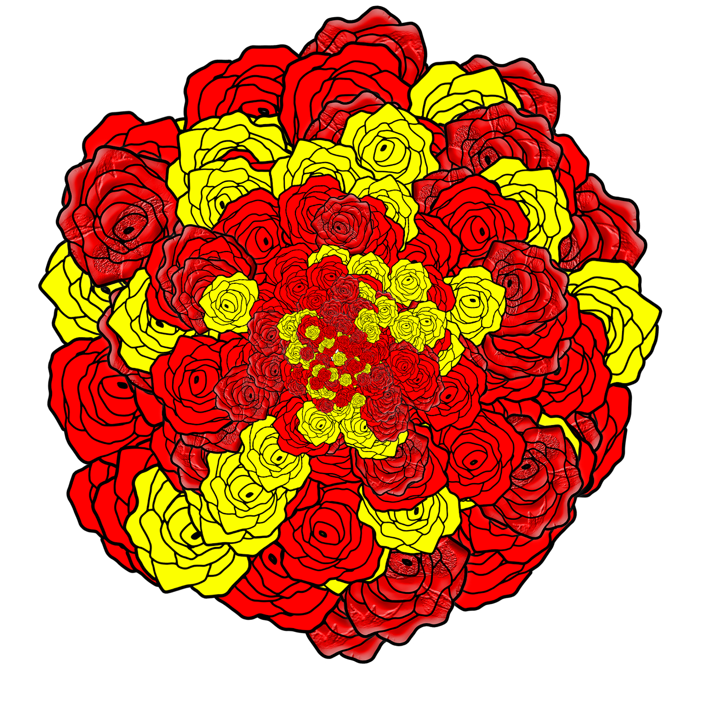
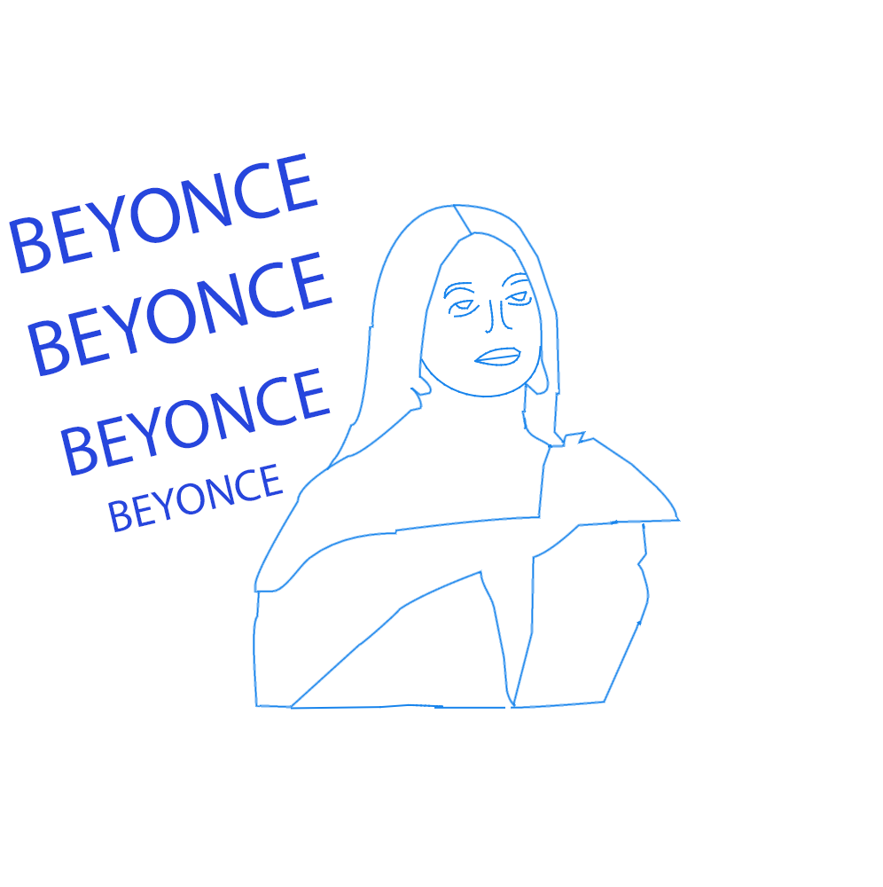
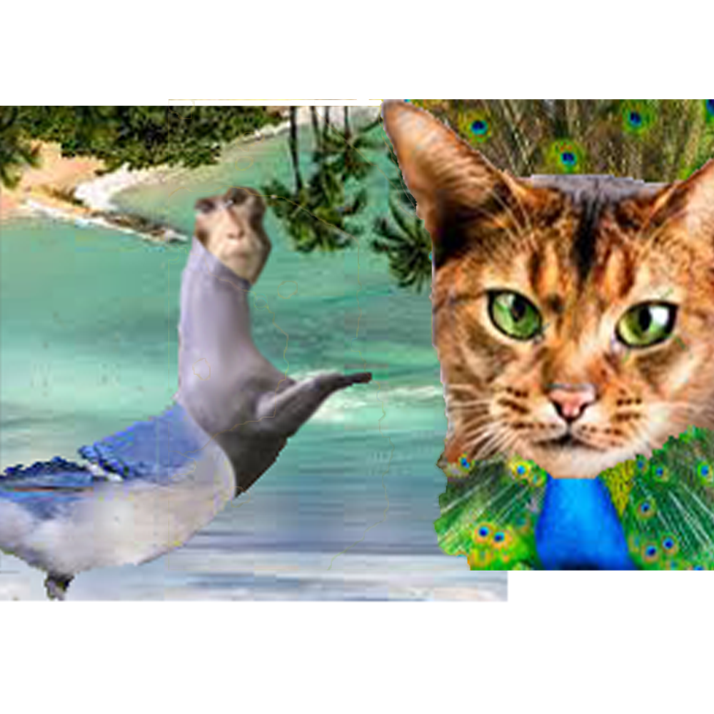
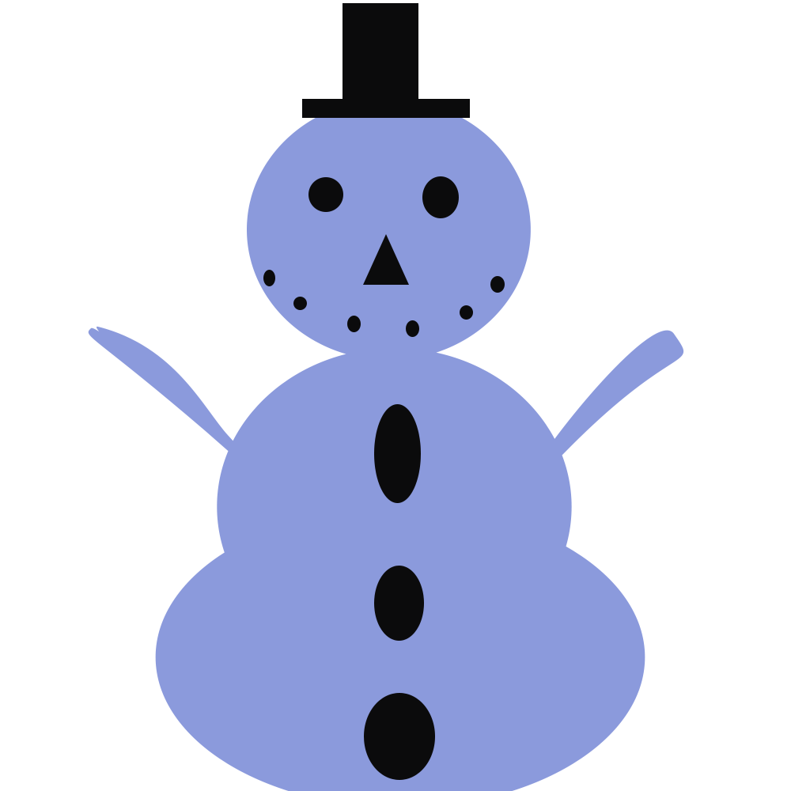

Visual Design
Pop Art Gradient

Artist statement: I wanted to pick a celebrity for my pop art gradient so I picked Sade. I, and my family enjoy listening to her music. In this pop art I show cased her beauty and expressed my love for her music. I used bright virbrant colors to create a joyful and exciting mood.
Mandalas

Artist statement: When creating this piece of art I though about what was going to be my main shape i would use to create the whol image. I decided to go with a rose. My main goal was to have my final image look like a bouquet of flowers. I used the colors red and yellow to create a simple constrast between shades.
Pop art 2

Artist statement: I decided to pick another artist I enjoy listing to. As you can see I chose Beyonce. For this piece of art I wanted to just stick to one main color, so I went with a purple/blue color.
landscapes
.png)
Artist statement: I wanted to showcase my ability to be creative and open-minded.When creating my pixel art I wanted to give myself a challenge so I picked an image that I probably wouldn't have picked. I wanted to show different colors. You’ll see colors like green, white and different shades of pink to create balance. I enjoyed seeing a landscape of a pink tree because I feel like it's rare to see, so I thought it would be a good opportunity to explore creating something different. When creating my landscape I thought about a color scheme to add texture, and creativity.
Contour lines

Artist statement: In this portrait I used Beyonce as my main subject. She’s a well known celebrity and I admire her hard work and dedication so that is why I chose to do a portrait of her. I included a bold blue text with the name BEYONCE in all bold. I copied and pasted her name a couple times and slanted it. I used the pen tool to trace her face and dress.
Battle of the beasts

Artist statement: For this piece of art i went out of my comfort zone and challenged myself to create something different and creative. For each animal you see, I took body parts off of three different animals to combine it into one.
Snow flake
Artist statement: I wanted to be creative with tracing the snowflake so I added blue to the snowflake to create a different look.
Snow person

Artist statement: I decided to have fun with this piece of art and create a blue snowman.